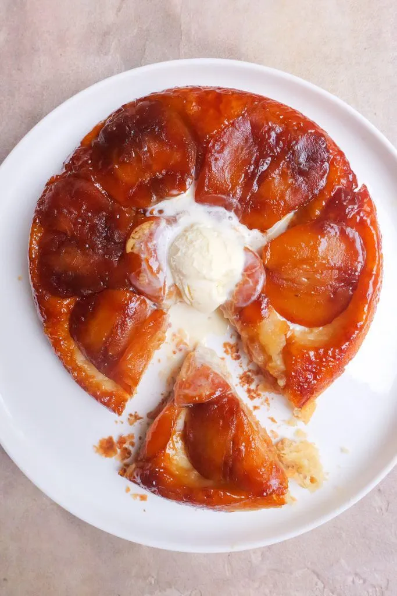

Apple Tatin

(Source: https://daenskitchen.com/apple-tarte-tatin/)
Description
Named after two sisters who shared the surname Tatin, a Tarte Tatin is a beautiful pastry full of fruits. Traditionally, apples are used. With its origins in nineteenth century Paris, Tarte Tatin is the cheat sheet to feeling like you’re in Europe without actually making the trip across the pond. This apple tarte tatin is a sweet yet acidic treat that will transport you right to the Champs-Elysees.
Ingredients
Rough Puff Pastry
- 2 cups white all purpose flour
- 200 g unsalted butter
- 6 tbsp icy cold water
- 1/2 cup caster sugar
- 1 teaspoon vanilla
Apple Tarte Tatin
- 3-4 large green apples peeled, cored and quartered
- 50 g unsalted butter
- 70 g caster sugar
- 1 puff pastry sheet
Steps
Rough Puff Pastry
- Chill a large bowl, grater and the butter in the freezer for 20 minutes before making your pastry. Combine the flour and sugar into the chilled bowl and mix together with a fork. Grate the butter on the chilled grater and add to the flour. Break the butter into the flour with your fingertips until you have a pebble like crumbly texture. You can do this by pinching and rubbing the butter and flour between your finger.
- Create a well in the centre of the flour and pour in the icy cold water. Use a fork to combine the flour and water until most of the flour is moist.
- Lightly dust your kitchen bench or working surface with flour and mould your dough into a rough disc shape. The dough should be firm and moist but not sticky. You want just enough moisture so the dough is barely sticking to itself. If it needs more moisture slightly wet your hands when working with it or if it’s too dry, lightly dust it with flour. Wrap the dough in plastic wrap and leave to rest in the fridge for 1 – 2 hours or overnight.
- Using a rolling pin, roll the dough out into a thick rectangle shape about 2cm thick. Fold the dough into thirds as if you were folding a piece of paper to go into an envelope. Turn the dough 90 degrees clockwise and roll it back out into a 2cm thick rectangle. Repeat this step 4 – 6 times until you have created many layers and the dough is smooth.
- Divide the dough into two and wrap each piece in glad wrap. You will only need half of the dough for this recipe. The dough will keep in the fridge for 2 days and in the freezer for 3 months. Leave the dough to rest for a minimum of 1 hour or ideally overnight.
Apple Tarte Tatin
- Preheat the oven to 180 degrees Celsius.
- Roll out the puff pastry. Using a 20cm diameter base pan, place it over the puff pastry sheet and cut to shape so it nicely fits the pan.
- In the same pan on a medium heat, scatter the sugar over and leave to cook until it turns an amber colour and begins to caramalise. Do not stir the sugar during this step. Add the butter to the pan and stir through the sugar until melted and combined with the sugar.
- Take the pan off the heat and place the apples over the caramel sauce. Lay the puff pastry over the apples and tuck in the edges. Poke the pastry with a sharp knife up to four times. Place into the oven and bake for 25 minutes or until the pastry is golden brown and the caramel sauce is bubbling over the edges.
- Carefully transfer the apple tarte tatin to a plate by place it ovaer the pan and then flipping the pan onto the plate. The tarte should easily remove itself from the pan.
- Serve immediately with a dollop of ice cream or freshly whipped cream